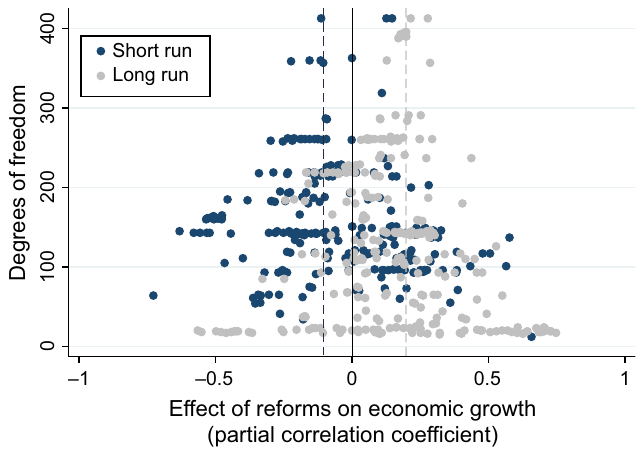
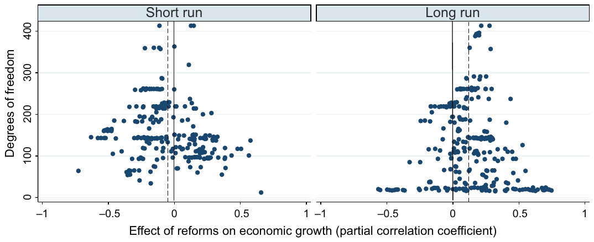
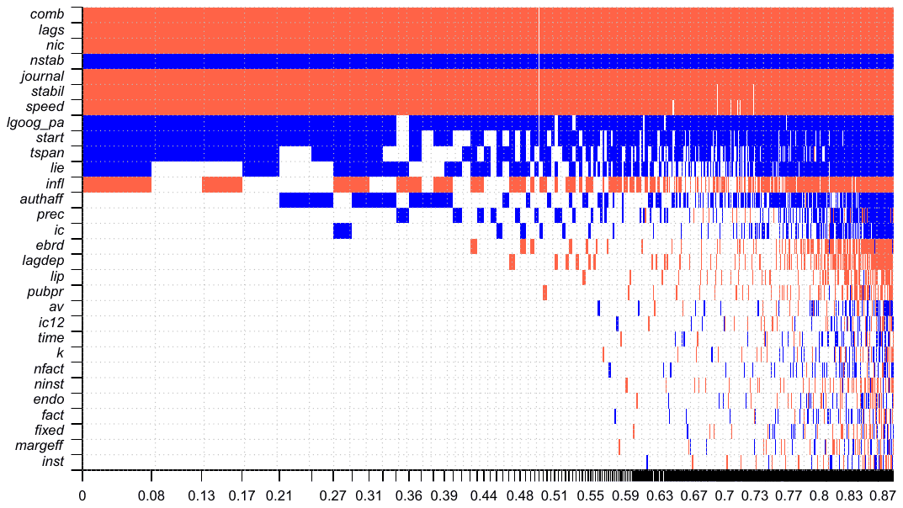
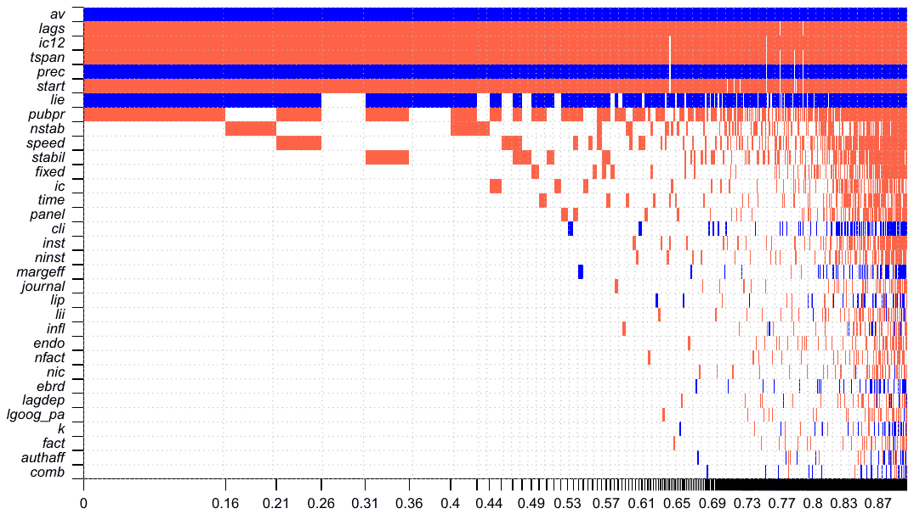

Structural Reforms and Growth in Transition: A Meta-Analysis
Jan Babecky & Tomas Havranek (2014), "Structural Reforms and Growth in Transition: A Meta-Analysis." Economics of Transition 22(1), pp. 13-42. https://doi.org/10.1111/ecot.12029.
Jan Babecky* and Tomas Havranek**
*Czech National Bank. E-mail: jan.babecky@cnb.cz
**Czech National Bank and Charles University, Prague . E-mail: tomas.havranek@ies-prague.org
Received: August 31, 2012; Acceptance: July 17, 2013
We are grateful to Kamil Galuscak, Jost Heckemeyer, Zuzana Irsova, Marek Rusnak, Jiri Schwarz, Katerina Smidkova, Petar Stankov, seminar participants at the Czech National Bank, Marek Rusnak and an anonymous referee for their helpful comments on previous versions of the manuscript. We thank the Czech National Bank for support. Tomas Havranek acknowledges support from the Grant Agency of the Czech Republic (grant #P402/12/1993). The views expressed here are those of the authors and not necessarily those of the Czech National Bank.
Abstract
The present fiscal difficulties of many countries amplify the call for structural reforms. To provide stylized facts on how reforms worked in the past, we quantitatively review 60 studies estimating the relationship between reforms and growth. These studies examine structural reforms carried out in 26 transition countries around the world. Our results show that an average reform caused substantial costs in the short run, but had strong positive effects on long-run growth. Reforms focused on external liberalization proved to be more beneficial than others in both the short and long run. The findings hold even after correction for publication bias and misspecifications present in some primary studies.
JEL classifications: C83, O11, P21.
Keywords: Structural reforms, growth, transition economies, meta-analysis, Bayesian model averaging.
1. Introduction
The recent financial and economic crisis has intensified the need for structural reforms conducive to economic growth. As many countries experience fiscal problems that limit the ability of governments to finance recovery by means of fiscal expansion, growth-enhancing reforms have become the focus of attention in policy debates. To design new reform packages, however, policymakers need to know how different reforms worked in the past.
The unprecedented process of transformation from a planned to a market economy brings a unique opportunity to examine empirically the link between structural reforms and economic performance. Indeed, for transition economies, there is a large number of empirical studies that use a similar measure of reforms, similar type of growth regressions and similar coverage of countries to uncover the reform effect. Yet, the results of these studies vary a lot, ranging from negative to positive estimates, while the average is close to zero.
When empirical studies disagree about the size and direction of an effect, tools of quantitative literature reviews become particularly helpful to understand what lies behind the observed variation in the reported results. The quantitative method of synthesizing information from the stock of available literature is called meta-analysis (Stanley, 2001). Developed in medical science, meta-analysis has become widely used in social sciences including economics: see, for example, Ashenfelter et al. (1999) for an assessment of returns to education, Rose and Stanley (2005) for an analysis of the effect of common currencies on international trade, and Havranek and Irsova (2011) for evidence on vertical spillovers from foreign direct investment. In the context of the economic growth literature, Doucouliagos and Ulubasoglu (2008) apply meta-analysis to examine the link between democracy and growth, while Nijkamp and Poot (2004) focus on the relationship between economic growth and fiscal policy.
Babecky and Campos (2011) analyse the variation in the reported effects of reforms on growth using meta-analysis techniques and relate the variation to study characteristics such as estimation methods, reform measurement, model specification and study quality. Nevertheless, the analysis of Babecky and Campos (2011) focuses on statistical significance: they use t-statistics and do not examine the magnitude of the reform effect. Examination of the magnitude of the reform effect is complicated because there is no 'reform elasticity' due to different units of measurement and different empirical specifications used by researchers in primary studies. In this article, we extend the dataset of Babecky and Campos (2011) and recompute the reported effects to partial correlation coefficients, which allows us to examine the relative magnitude of the effect of reforms. Moreover, we correct the average estimates for publication bias, use Bayesian model averaging (BMA) to find the most important factors driving the reported magnitude of the reform effect, and compute the average value of the short- and long-run effect corrected for misspecifications in some primary studies.
The remainder of the article is organized as follows. Section 2 outlines how the reform effects are usually estimated in the literature and presents an overview of primary studies. Section 3 provides estimates of simple averages of the short- and long-run reform effect. Section 4 performs tests for publication bias and presents estimates of the reform effect corrected for the bias. Section 5 computes the reform effect conditional on 'best-practice' methodology used in the literature. Section 7 concludes the article and outlines suggestions for future research. Appendices present details concerning the BMA exercise employed in the article: Appendix A reports the estimation results and Appendix B provides diagnostics.
2. Studies on reforms and growth
In the existing empirical studies, the effect of structural reforms on economic performance is typically estimated using growth regressions that take the following general form:
where is real GDP growth, is a measure of reform, is a vector of control variables including, for instance, initial conditions, measures of macroeconomic stabilization, institutional development, factors of production; and is the error term. Coefficient represents the estimate of the effect of reforms on growth conditional on the set of control variables .
Specification (1) in its most basic form was applied by earlier studies, which examined the effect of reforms on growth in a cross-section framework, using average values over a certain period of time, for example, 5–8 years (Heybey and Murrell, 1999; Krueger and Ciolko, 1998; de Melo et al., 1997, among others). Subsequently, specification (1) was extended into a panel framework to address time dynamics, potential endogeneity of reforms and different measures of reforms (for instance, the level vs. the speed of reforms). A typical panel version of Equation (1) used by studies in our sample takes one of the three following forms:
where the sub-indices and denote the country and the time period. Specifically, denotes the year of the sample since all reviewed studies work with yearly data, and the average number of countries in panels is about 24. Notice that the coefficients in Equations (1) through (4) are different (the constant terms and other coefficients being different as well).
One important difference in the effect of reforms on growth in specifications (1)–(4) concerns the horizon considered, namely the difference between the short- and long-run effect. The long run (cumulative) effect of structural reform on growth is measured by: (i) coefficient in Equation (1) estimated in a cross-section over a period of several years; (ii) coefficient in Equation (2); a sum of the coefficients and in Equation (3); and coefficient in (4). The short run (contemporaneous) effect of reform on growth is captured by (i) coefficient in Equation (1) if it is estimated for a given year; (ii) coefficient in Equation (3); and (iii) coefficient in Equation (2), although in this case the explanatory variable is a change in reform as opposed to the reform level in other specifications. Thus, we can distinguish whether the reform effect on growth is an immediate one (within a year) or whether it corresponds to a longer horizon.
Furthermore, the coefficient could be different even for the same type of specification depending on whether the variables enter the equation in logarithms or in absolute values (or as a combination of both), and on the units of measurement if absolute values are used. Compared to the studies estimating, for example, the wage elasticity or employment elasticity, the literature evaluating the effect of reform on growth does not have such a term as 'reform elasticity', which complicates the comparison of results across studies. One way of converting the estimates from different studies to a common metric is to record the estimated sign of the effect. This was done by Babecky and Campos (2011) in their meta-analysis – but we choose a different approach, described in the next section.
The selection of studies was performed using three criteria. A suitable study must (i) cover transition economies, (ii) report estimates of the reform coefficients and their t-statistics (or standard errors), and (iii) contain details on the estimation methodology, type of reform and country and period coverage. Primary studies were searched using the EconLit, SSRN, RePEc and Google Scholar, using keywords 'reform', 'growth' and 'transition economies'. Next, the search was extended to the references contained in the identified studies and to their citations. For each reported coefficient a set of several dozen characteristics was recorded, including data and estimation methods, type of reform, measure of reform dynamics, control variables and publication characteristics (details are provided in Section 5). In total, 60 studies issued since 1996 are included, both published and unpublished; they contain 537 empirical estimates of the effect of various types of structural reform on growth in transition economies. The list of studies is provided in Table 1.
In the next section, we propose a refined measure of the reform effect on growth, which captures both the magnitude and significance of the effect. This measure allows us to explicitly estimate the average reform effect, and subsequently to construct an estimate of the effect corrected for publication bias and misspecifications in some primary studies.
| Abed and Davoodi (2002) | Fidrmuc and Tichit (2009) | de Melo et al. (1997) |
|---|---|---|
| Ahrens and Meurers (2002) | Fischer and Sahay (2001) | de Melo et al. (2001) |
| Apolte (2011) | Fischer and Sahay (2004) | Merlevede (2003) |
| Aslund et al. (1996) | Fischer et al. (1996a) | Mickiewicz (2005a) |
| Aziz and Westcott (1997) | Fischer et al. (1996b) | Mickiewicz (2005b) |
| Beck and Laeven (2006) | Fischer et al. (1998) | Nath (2009) |
| Borensztein et al. (1999) | Gillman and Harris (2010) | Neyapti and Dincer (2005) |
| Bower and Turrini (2009) | Godoy and Stiglitz (2006) | Pääkkönen (2010) |
| Cerović and Nojković (2009) | Havrylyshyn et al. (2001) | Pelipas and Chubrik (2008) |
| Christoffersen and Doyle (2000) | Havrylyshyn and van Rooden (2003) | Piculescu (2003) |
| Cieslik and Tarsalewska (2013) | Hernandez-Cata (1997) | Polanec (2004) |
| Cungu and Swinnen (2003) | Heybey and Murrell (1999) | Radulescu and Barlow (2002) |
| Denizer (1997) | Iradian (2009) | Radziwill and Smietanka (2009) |
| Eicher and Schreiber (2010) | Josifidis et al. (2012) | Raimbaev (2011) |
| Eschenbach and Hoekman (2006) | Kim and Pirttila (2003) | Rapacki and Prchniak (2009) |
| Falcetti et al. (2002) | Krueger and Ciolko (1998) | Sachs (1996) |
| Falcetti et al. (2006) | Lawson and Wang (2005) | Selowsky and Martin (1997) |
| Fidrmuc (2001) | Lejko and Bojnec (2012) | Staehr (2005) |
| Fidrmuc (2003) | Loungani and Sheets (1997) | Stuckler et al. (2009) |
| Fidrmuc and Tichit (2004) | de Macedo and Martins (2008) | Wolf (1999) |
Notes: Both published and unpublished studies are included. The search for primary studies was terminated on May 1, 2013.
3. Estimating the average effect
Because the regression coefficients associated with the reform effect reported in primary studies are not always comparable, due to different units and transformations of the variables employed, it is necessary to use the corresponding t-statistics as a starting point. The t-statistics, however, do not represent a standardized measure of the effect of structural reforms on economic growth, since they depend on the number of degrees of freedom available for estimation in the primary study. Hence, t-statistics cannot be directly aggregated; we need to standardize them. A standardized measure of statistical association, commonly employed in meta-analysis (e.g. Djankov and Murrell, 2002; Doucouliagos and Laroche, 2009), is the partial correlation coefficient, computed in the following way:
where denotes the partial correlation coefficient corresponding to the effect of reforms on growth, denotes the t-statistic, and df denotes the number of degrees of freedom available for estimation in the primary study. The partial correlation coefficient is limited to the interval . The standard error of the partial correlation coefficient can be computed as . The dataset enables us to construct 245 partial correlation coefficients for the short run and 292 coefficients for the long run.
We illustrate the collected reform effects, converted to partial correlation coefficients, in Figure 1. The figure depicts reform effects on the horizontal axis and the number of degrees of freedom used in the estimation (which can be thought of as a measure of estimation precision) on the vertical axis. Such a figure is usually called the funnel plot: if all estimates measure the same effect, the most precise ones will be concentrated near the underlying reform effect, while the imprecise ones will be widely dispersed. Therefore, the cloud of the estimates should form an inverted funnel with the tip pointing up at the underlying reform effect. Nevertheless, the funnel depicted in Figure 1 apparently has two peaks, which suggests heterogeneity; in other words, the collected estimates seem to cover two distinct effects.

Notes: The figure shows a scatter plot of all reported estimates of the reform effect. The vertical axis measures the number of degrees of freedom available for estimation in each model. The dashed lines denote averages of the 10 estimates with the most degrees of freedom for the short and long run.
| Method | Short run | Long run | ||||
|---|---|---|---|---|---|---|
| Estimated effect | 95% CI | Estimated effect | 95% CI | |||
| Simple average | −0.052 | −0.084 | −0.021 | 0.146 | 0.118 | 0.173 |
| Fixed effects | −0.081 | −0.091 | −0.072 | 0.135 | 0.125 | 0.145 |
| Random effects | −0.056 | −0.087 | −0.025 | 0.143 | 0.122 | 0.164 |
Notes: 'Estimated effect' denotes the estimated partial correlation coefficient for the relationship between structural reforms and economic growth. 'Simple average' is the unweighted arithmetic average of all estimates. 'Fixed effects' is the average weighted by the inverse of the standard error of the partial correlation coefficient. 'Random effects' is the average weighted by the inverse of the standard error of the partial correlation coefficient; additionally, heterogeneity among estimates is taken into account.
Indeed, when the short-run effects are separated from the long-run ones in Figure 1, it is clear that the cloud of the estimates consists of two overlapping funnels. Most of the precise estimates of the short-run effect are negative, while for the long-run effect the precise estimates are positive. This simple analysis suggests that, on average, structural reforms carried out in the past in transition countries had non-negligible costs in the short run, but fuelled growth in the long run. In what follows, we need to examine the short-run and long-run effects separately.
The intuition given by Figure 1 is confirmed by the simple arithmetic averages reported in Table 2: the estimated averages are −0.05 for the short run and 0.15 for the long run. The results hardly change when more specialized meta-analysis techniques are used: namely, the fixed-effects estimator and random-effects estimator (see Borenstein et al., 2009). The fixed-effects estimator weights the partial correlation coefficients using the inverse of their standard errors. This 'precision weighting' is commonly applied in meta-analysis; if the weights were instead based on the number of observations or degrees of freedom of the underlying model, the results would be very similar. The implied averages are −0.08 for the short run and 0.14 for the long run. Finally, the random-effects estimator explicitly assumes that the underlying reform effects estimated in different models may vary. Allowing for heterogeneity in this way brings results broadly similar to the previous two methods: the average reaches −0.06 for the short run and 0.14 for the long run.
All averages estimated in Table 2 are different from zero at the 1 percent level of significance; the short-run effect of reforms on growth is negative, the long-run effect is positive. Nevertheless, it remains to be shown whether these effects are actually important in practice. According to Doucouliagos's guidelines for the importance of partial correlation in economics (Doucouliagos, 2011),2 values of partial correlation smaller than 0.07 in absolute value denote no important effect, values between 0.07 and 0.17 denote a small effect, values between 0.17 and 0.33 denote a medium effect, and values larger than 0.33 denote a strong effect.
In our case, the estimated short-run average suggests a negative, but small (or even negligible) effect of structural reforms on economic growth in the short run. For the long run, the estimated average effect of reform on growth is positive and stronger, but still falls into the category of ‘small’ effects. The estimates reported in this section, however, do not take into account that different estimates may have different probability of being reported (the problem is usually referred to as publication bias) and that models estimating the effect of reforms are of different quality (heterogeneity). Both issues may have important consequences for the estimates of the underlying effect, and we discuss them in turn in the following sections as we refine our estimates of the effect of reforms.
4. Consequences of publication bias
It has long been recognized that scientific results showing a certain direction or statistical significance may be more likely to get published than others; the other results often ending up in a ‘file drawer’ (Rosenthal, 1979). The problem has been found especially strong in empirical economics, as documented by, for example, Card and Krueger (1995), Görg and Strobl (2001), Havranek (2010), Havranek et al. (2012), and Rusnak et al. (2013). A recent survey of meta-analyses conducted in economics (Doucouliagos and Stanley, 2013) documents that most areas of empirical economics are affected by publication bias to a certain degree.
Most commonly, the bias manifests as a preference for results that are statistically significant or consistent with a major theory (Stanley, 2005). While the problem is usually labelled ‘publication’ bias, it concerns unpublished manuscripts as well, since authors may use the sign of their estimates as a specification check, and discard those with the ‘wrong’ (i.e. unintuitive) sign. Therefore, publication bias is a complex phenomenon stemming from the preferences of authors, editors and reviewers.
Publication bias can seriously distort the estimates of the average effect taken from the literature, because if the bias is present, some types of results become systematically underrepresented, their correctness or incorrectness notwithstanding. For example, Stanley (2005) shows how the average price elasticity of water demand reported in the literature is exaggerated fourfold due to publication bias. In the literature on reforms and growth, we have perhaps less reason to expect publication bias, since both positive and negative effects of reforms are theoretically possible, particularly when comparing short-run costs vs. long-run benefits. On the other hand, since the topic is politically attractive, researchers with a political agenda may implicitly prefer strong results; positive or negative, depending on their ideological view. Some researchers may simply like to report ‘good news’ in contrast to negative or insignificant estimates. For example, in the literature on the effects of foreign direct investment on the productivity of domestic firms in transition and developing countries, strong publication bias toward positive results has been found (Havranek and Irsova, 2012). If a similar tendency is present in the literature on reforms and growth, the average effects estimated in the previous section must be corrected for publication bias.
To test for publication bias, the funnel plot introduced in the previous section can be used (Egger et al., 1997). Figure 2 shows separately the short- and long-run effect of reforms on growth. In the absence of publication bias, the funnels should be symmetrical with respect to the line representing the average estimate. In other words, all imprecise estimates should have the same probability of being reported, and in that case the average effect would also represent the underlying reform effect. If, in contrast, publication bias plagues the literature, positive or negative estimates would be underrepresented, and the funnel would become asymmetrical. Moreover, if statistically significant results were preferred to the insignificant ones, the funnel would become hollow, since estimates that are small in magnitude and that are estimated with low precision get low t-statistics.
The funnels depicted in Figure 2 are relatively symmetrical when compared to funnels typically reported in economics meta-analyses (Doucouliagos and Stanley, 2013), but some signs of publication bias are still present. Both funnels are a little skewed; to the right for the short-run effect and to the left for the long-run effect. The simple averages are smaller in absolute value than the values of estimates with the highest precision. The funnels thus present some evidence for a slight preference for positive results in the case of the reported short-run effects and for

Notes: The dashed lines denote averages of all reported estimates for the short and long run. In the absence of publication bias, the funnels should be symmetrical with respect to the line representing the average estimate.
negative results in the case of the long-run effects. Moreover, the funnel corresponding to the short-run effects seems to be relatively hollow, suggesting publication bias against insignificant results. But since the visual test of publication bias is inevitably subjective, more formal analysis is necessary to ascertain whether the bias is important.
The formal test of publication bias builds on Card and Krueger (1995) and Egger et al. (1997): in the absence of publication bias, the estimated size of the partial correlation coefficient should not be correlated with its standard error. If, in contrast, estimates of the reform effect are selected for publication because of their significance or sign, the relationship will become significant. This idea is formalized by the following regression:
where is the partial correlation coefficient derived from an i-th primary study, denotes the underlying partial correlation corrected for publication bias, denotes the standard error of and measures the direction and magnitude of publication bias. Nevertheless, regression (6) is likely to be heteroskedastic, because the explanatory variable is a sample estimate of the standard deviation of the response variable. To ensure efficiency, the regression is usually estimated by weighted least squares (Stanley, 2005, 2008), where the precision of the estimates (the inverse of the standard error) is taken as weight. In meta-analysis, this estimator is usually called fixed effects, similarly to the estimator of the simple average introduced in the previous section (now only the term capturing publication bias is added). To check the sensitivity of our results, we also employ a robust method, iteratively re-weighted least squares (Hamilton, 2006, pp. 239–256). Finally, because the estimated reform effects are extracted from many studies, and different studies report a different number of estimates, in the third specification we cluster standard errors at the study level.
The results of the test for publication bias and the underlying effect corrected for the bias are reported in Table 3. According to all three methods, publication bias is not statistically significant for the estimates of the long-run reform effect, and consequently the corrected effect is very close to the simple average (approximately 0.1). In contrast, publication bias is significant at the 1 percent level in the fixed-effects and robust estimations for the short-run effect, although it becomes less significant when standard errors are clustered at the study level. In that case, the P-value corresponding to in Equation (6) reaches 0.051. Nevertheless, the test for publication bias is known to have low power (Egger et al., 1997; Stanley, 2005), so estimates of on the borderline of statistical significance still indicate evidence of publication bias. More importantly, the corrected estimates of the short-run reform effect are consistent and significant at the 5 percent level across all three methods: they reach −0.39, which is approximately four times more than the simple averages reported in the previous section.
Therefore, after correction for publication bias, the long-term effect of an average reform on economic growth is still positive and small according to Doucouliagos’s
| Short run Fixed | Short run Robust | Short run Clustered | Long run Fixed | Long run Robust | Long run Clustered | |
|---|---|---|---|---|---|---|
| Publication bias (coef. ) | 4.137*** | 4.179*** | 4.137* | 0.313 | 0.265 | 0.313 |
| (0.947) | (0.961) | (2.036) | (0.290) | (0.300) | (0.586) | |
| Effect beyond bias | −0.394*** | −0.395*** | −0.394** | 0.110*** | 0.116*** | 0.110* |
| (Constant) | (0.073) | (0.074) | (0.164) | (0.025) | (0.026) | (0.056) |
| Observations | 245 | 245 | 245 | 292 | 292 | 292 |
Notes: Response variable is the effect of reforms on economic growth (partial correlation coefficient). Standard errors in parentheses. ‘Fixed’ denotes the estimates by weighted least squares; weighted by the inverse of the standard error of the partial correlation coefficient. ‘Robust’: estimated by iteratively re-weighted least squares. ‘Clustered’: estimated by weighted least squares; standard errors clustered at the study level. ***, ** and * denote significance at the 1%, 5% and 10% levels, respectively.
guidelines. In the short run, however, reforms seem to bring considerable costs in terms of economic performance: the value of the short-run partial correlation equal to −0.39 would be classified as a ‘strong’ effect according to Doucouliagos’s guidelines.
5. Consequences of heterogeneity
The primary studies in our sample employ a variety of different methods to estimate the effect of structural reforms on economic performance. The studies differ in terms of quality of the data and econometric techniques used, for example. If these differences have a systematic influence on the estimated reform effect, we need to take it into account and adjust the average estimate presented in the previous section.
The heterogeneity in the estimates of the reform effect was examined and discussed in detail in Babecky and Campos (2011); in this article, we use the variables capturing study design to estimate the average effect conditional on the ‘best practice’ from the literature. We have identified 32 variables describing the characteristics of data and methods used in the primary studies, the type of the reform index employed, the measure of dynamics, specification characteristics and publication characteristics. All variables are explained and summarized in Table 4.
The data and method characteristics include information on whether a panel or cross-sectional dataset is used and whether endogeneity is taken into account. Variables capturing the type of the reform index include dummy variables for the institutions producing the index (the World Bank, EBRD or a combination of both). The category ‘measure of dynamics’ captures, for example, whether the lagged dependent variable is used in the regression and whether time dynamics is controlled for. Specification characteristics include, among others, dummy variables for the control
| Variable | Description | Short run Mean | Short run SD | Long run Mean | Long run SD |
|---|---|---|---|---|---|
| prec | The precision of the estimated partial correlation coefficient (the inverse of the standard error) | 12.666 | 2.675 | 10.535 | 4.456 |
| Data and methods | |||||
| panel | = 1 if the model uses panel data. | 0.996 | 0.064 | 0.750 | 0.434 |
| endo | = 1 if model used is 2SLS, 3SLS, GMM or cointegration. | 0.298 | 0.458 | 0.274 | 0.447 |
| fixed | = 1 if fixed effects estimation is used (or country dummies). | 0.318 | 0.467 | 0.144 | 0.352 |
| k | The number of explanatory variables. | 13.449 | 10.478 | 10.048 | 9.768 |
| start | The first year of the sample. | 8.155 | 2.271 | 7.801 | 3.052 |
| tspan | The number of years in the sample. | 7.963 | 3.437 | 8.452 | 4.526 |
| Type of reform index | |||||
| ebrd | = 1 if the reform index originates from the EBRD only. | 0.453 | 0.499 | 0.620 | 0.486 |
| comb | = 1 if a combination of EBRD and WB indices is used. | 0.163 | 0.370 | 0.151 | 0.358 |
| lii | = 1 if internal and/or price liberalization components are used as a reform measure. | 0.069 | 0.255 | 0.048 | 0.214 |
| lie | = 1 if external liberalization components are used. | 0.069 | 0.255 | 0.045 | 0.207 |
| lip | = 1 if privatization and banking reform components are used. | 0.110 | 0.314 | 0.082 | 0.275 |
| margeff | = 1 if lii, lie and lip are used in the same specification. | 0.118 | 0.324 | 0.068 | 0.253 |
| av | = 1 if average (simple or weighted, or simple sum) of lii, lie and lip is used. | 0.645 | 0.480 | 0.798 | 0.402 |
| cli | = 1 if the Cumulative Liberalization Index from the World Bank is used. | 0.008 | 0.090 | 0.082 | 0.275 |
| Measure of dynamics | |||||
| lagdep | = 1 if lagged dependent variable is used in the regression. | 0.184 | 0.388 | 0.154 | 0.362 |
| speed | = 1 if speed is the measure of reform. | 0.241 | 0.428 | 0.205 | 0.405 |
| lags | = 1 if both contemporaneous and lagged reform variables are used. | 0.620 | 0.486 | 0.534 | 0.500 |
| time | = 1 if time dynamics is controlled for. | 0.167 | 0.374 | 0.195 | 0.397 |
| Variable | Description | Short run Mean | Short run SD | Long run Mean | Long run SD |
|---|---|---|---|---|---|
| Specification characteristics | |||||
| ic | = 1 if controlled for initial conditions. | 0.718 | 0.451 | 0.791 | 0.407 |
| ic12 | = 1 if the first cluster and/or second cluster of initial conditions from de Melo et al. (1997) is used. | 0.278 | 0.449 | 0.250 | 0.434 |
| nic | The number of types of controls for initial conditions. | 1.624 | 1.916 | 1.740 | 1.637 |
| stabil | = 1 if controlled for stabilization. | 0.910 | 0.286 | 0.726 | 0.447 |
| nstab | The number of types of controls for stabilization. | 1.518 | 0.939 | 1.086 | 0.925 |
| infl | = 1 if inflation is controlled for. | 0.824 | 0.381 | 0.616 | 0.487 |
| inst | = 1 if controlled for institutional development. | 0.216 | 0.413 | 0.260 | 0.440 |
| ninst | The number of types of controls for institutional development. | 0.229 | 0.449 | 0.411 | 0.871 |
| fact | = 1 if controlled for factors of production. | 0.294 | 0.456 | 0.229 | 0.421 |
| nfact | The number of types of controls for factors of production. | 0.318 | 0.517 | 0.264 | 0.513 |
| pubpr | = 1 if the study separates the effect of reform on public and private sector. | 0.065 | 0.248 | 0.048 | 0.214 |
| Publication characteristics | |||||
| journal | = 1 if the study is published in a refereed journal. | 0.465 | 0.500 | 0.565 | 0.497 |
| lgoog_pa | The logarithm of the number of citations per year from Google Scholar. | 1.751 | 1.114 | 1.840 | 1.004 |
| authaff | = 1 if all authors are from academia. | 0.502 | 0.501 | 0.568 | 0.496 |
Source: Primary studies estimating the effect of structural reforms on economic growth. For the explanation of the differences among the reported short-run effects, variables panel, lii and cli are not used: the variation in these variables is too low or they are perfectly correlated with other variables.
for initial conditions, stabilization and institutional development. Publication characteristics capture the affiliation of the authors (academia or policy institutions), the number of citations of the study and the type of publication (a journal article or a working paper).
We intend to explain the differences in the partial correlation coefficients corresponding to the reported reform effects. To be specific, we need to plug the variables capturing heterogeneity into Equation (6) to get the following general model:
where Study design denotes a vector of variables listed in Table 4. The specification still controls for publication bias (), but the estimate of the underlying reform effect, , now becomes conditional on the values of the variables explaining heterogeneity. To correct for heteroskedasticity, we still consider regression (7) in the fixed-effects form; that is, weighted by precision (as explained in Section 4).
It is not reasonable to estimate a regression including all 32 explanatory variables. At the same time, no theory can help us select which variables could matter for the reform effect and which should be omitted. This is an example of model and parameter uncertainty, common in meta-analysis, that can be addressed by a method called BMA (e.g. Ciccone and Jarocinski, 2010; Fernandez et al., 2001; Sala-i-Martin et al., 2004). BMA has been used in meta-analysis, for instance, by Irsova and Havranek (2013) and Moeltner and Woodward (2009).
BMA estimates many regressions with the possible subsets of all explanatory variables on the right-hand side and constructs a weighted average over these regressions. The weights used in the BMA estimation are the so-called posterior model probabilities. The posterior model probability can be thought of as a measure of the fit of the model, analogous to the adjusted R-squared: the models that fit the data best get the highest posterior model probability, and vice versa. Moreover, for each explanatory variable, we can compute the posterior inclusion probability, which represents the sum of the posterior model probabilities of all models that contain this particular variable. In other words, the posterior inclusion probability expresses how likely it is that the particular variable should be included in the ‘true’ regression. For the estimation of the BMA exercise we use the bms package available in R (developed by Feldkircher and Zeugner, 2009, who also provide a detailed explanation of BMA). More details on the BMA procedure employed in this article are available in Appendix B.
The results of the BMA estimation for the short and long run are reported graphically in Figures 3 and 4; different regressions estimated by BMA are depicted as different columns. If the cell for a variable is blank, the variable is not included in the regression. If the cell is darker, the variable is included and the estimated sign is positive; similarly, if the cell is lighter, the variable is included and the estimated sign is negative. The width of the columns represents the weight for each regression. The variables are sorted by their posterior inclusion probabilities: most models that include the variables on the top of the figure belong among the good models (in terms of the posterior model probability), while the models that include the variables on the bottom of the figure usually do not fit the data well.
Some variables are important (i.e. have the posterior inclusion probability higher than 50 percent) for the estimates of the reform effect in both the short and long run. These are lie (a dummy variable capturing the type of the reform index, namely external liberalization), entering with a positive sign and lags (a dummy variable capturing whether both contemporaneous and lagged reform variables are used in the model) entering with a negative sign. Moreover, these variables affect the estimates of the short- and long-run reform effect in the same direction. Some other variables are important either only for the short-run estimates (e.g. comb, a dummy variable reflecting whether a combination of the EBRD and World Bank indices is used) or only for the long-run estimates (e.g. tspan, the number of years included in the dataset), and some do not seem to be important at all.

Notes: Response variable: the effect of reforms on economic growth in the short run (partial correlation coefficient). The acronyms of explanatory variables are explained in Table 4. Columns denote individual models; variables are sorted by posterior inclusion probability in descending order. Darker shading = the variable is included and the estimated sign is positive. Lighter shading = the variable is included and the estimated sign is negative. No colour = the variable is not included in the model. The horizontal axis measures cumulative posterior model probabilities.
Our intention is to use the results concerning the sources of heterogeneity to improve our estimate of the underlying reform effect (). Instead of selecting one of the regressions (columns in Figures 3 and 4) and building our analysis on this specification, BMA uses the weighted average of all regressions; the numerical details on the weighted average of the coefficients for each variable are reported in Tables A1 and A2 in Appendix A. To estimate the underlying reform effect, we need to select the preferred value for each explanatory variable and plug it into Equation (7), using the regression coefficients given by BMA (the coefficients for variables with a low posterior inclusion probability are very close to zero). In other words, from the literature we create a synthetic model with best-practice methodology, the largest dataset and maximum quality characteristics.

Notes: Response variable: the effect of reforms on economic growth in the long run (partial correlation coefficient). The acronyms of explanatory variables are explained in Table 4. Columns denote individual models; variables are sorted by posterior inclusion probability in descending order. Darker shading = the variable is included and the estimated sign is positive. Lighter shading = the variable is included and the estimated sign is negative. No colour = the variable is not included in the model. The horizontal axis measures cumulative posterior model probabilities.
Of course, the authors of primary studies have different views on how best practice in this literature should appear, but some aspects of methodology would be preferred by most evaluators. We prefer panel-data models over cross-sectional models (i.e. we plug in value 1 for the corresponding dummy variable), models explicitly addressing endogeneity and models employing country-level fixed effects. We prefer the study to use data on the reform index from both the World Bank and the EBRD and to take into account internal, external, privatization and banking reform components (not only a subset of those). We prefer models controlling for time dynamics, initial conditions, stabilization, inflation, institutional development and factors of production. We also plug in sample maxima for the number of types of control for initial conditions, the number of types of control for stabilization, the number of types of control for institutional development and the number of types of control for factors of production. Finally, we prefer studies published in peer-reviewed journals and plug in sample maximum for the number of citations. All other variables are set to sample means.
The improved estimate of the reform effect for the short run reaches −0.38, which means virtually no change compared with the case when we only corrected the simple average for publication bias. In contrast, the improved estimate of the long-run effect reaches 0.27, which is almost thrice more than the estimate in the previous section. Both effects are statistically significant at the 5 percent level, and the numbers are robust to marginal changes in the definition of best practice. All in all, when we correct for both publication bias and misspecifications, according to Doucouliagos's guidelines the short-run effect of an average structural reform on economic growth would be classified as 'strong', while the resulting category for the long-run effect is 'medium'.
6. Discussion of the magnitude of the reform effect
We have noted that one of the advantages of this article over the previous meta-analysis by Babecky and Campos (2011) is our ability to estimate the strength of the reform effect (the other advantages being adjustment for publication selection bias, correction for misspecifications, use of Bayesian methods to address model uncertainty and an updated dataset). Babecky and Campos (2011) use t-statistics and experiment with three categories of reform effects: statistically significant and negative, statistically insignificant and statistically significant and positive. We use partial correlation coefficients, which represent a statistical measure of the strength of the underlying economic relationship and, in contrast to t-statistics, do not increase with the number of degrees of freedom and are therefore comparable across studies. Ideally, we would like to measure the economic effect directly, but elasticities of GDP growth with respect to changes in reform indices are not available.
For the classification of partial correlation coefficients into 'small', 'medium' and 'strong' effects we use the guidelines of Doucouliagos (2011). In the guidelines Doucouliagos (2011) collects 22,000 partial correlation coefficients reported in empirical economics. The thresholds are determined according to the distribution of the coefficients: if the coefficient is smaller than 75 percent of all empirical estimates reported in economics, it is classified as not being important at all. If the coefficient lies between the 25th and 50th centile of reported effects, it is classified as small. The coefficient is classified as medium if it lies between the 50th and 75th centile, and as large if it is greater than the 75th centile of partial correlation coefficients in empirical economics. In sum, the classifications of Doucouliagos (2011) are relative to the size of effects that economists typically find.
There are two reasons why in this case we cannot use elasticities, the preferred summary statistic of economic meta-analyses. First, different studies use different functional forms, which means that the reported estimates of reform effects are not directly comparable. Second, as Barlow (2006, p. 509) put it concerning the EBRD indices: 'A score of 4 of an index should not be regarded as indicating double a score of 2'. An increase in the index indicates improvement in the characteristic in question, but is not necessarily proportional to the previous value. For example, the price liberalization index is defined as taking value 1 if 'most prices are formally controlled by the government' (EBRD, 2004), value 2 if there is 'some lifting of price administration; state procurement at non-market prices for the majority of product categories', and value 3 if there is 'significant progress on price liberalization, but state procurement at non-market prices remains substantial.' An improvement from value 1 to value 2 represents a 100 percent increase in the index, but may actually be easier than a move from value 2 to value 3 (a 50 percent increase).
Bearing the two limitations in mind, we believe it could still be interesting to try to compare the results of studies on the relationship between reforms and growth summarized in our meta-analysis with effects of other macroeconomic shocks and policies.3 Such a comparison requires judgement on several key parameters and should therefore be taken with a grain of salt. First, for any meaningful estimate we need the elasticity of growth with respect to reforms, which cannot be directly obtained for reasons described in the previous paragraph. As Doucouliagos (2011) notes, there should be a positive relationship between the elasticity and partial correlation coefficient, but the exact form of the relationship is uncertain. We use the dataset of what we believe is the largest meta-analysis conducted in economics so far, Havranek et al. (2013),4 and regress the elasticities reported there on partial correlations to get some idea about the relationship. The regression yields a coefficient on partial correlations of 1 with an intercept of 0.34, and we will use these estimates in our analysis although we realize that the relationship may be field-specific.
The estimates imply the short-run elasticity of growth with respect to reforms of −0.72 and the long-run elasticity of 0.61. Next, we need an estimate of the percentage change in reform indices due to typical reforms. Changes in EBRD reform scores of about 1/3 are relatively common, as illustrated in EBRD (2004, p. 7): for example, such an improvement in the reform index represented 'approval of new competition law and creation of independent competition authority' in Albania, 'adoption of a new bankruptcy act, amendments to the law on public companies and the introduction of measures to improve the effectiveness of the judiciary' in Croatia, or 'significant privatizations over the past year, including the oil and gas company Petrom and other energy assets' in Romania. If we take the midpoint of the range of the indices, such reforms reflect a 13 percent improvement of reform scores. Using the estimated elasticities and assuming a transition country with a 4 percent trend growth rate, we find that a standardized reform translates into a decrease of short-term growth by 0.4 percentage points and an increase in the long-term growth rate of 0.3 percentage points. Our results from the previous section also indicate that reforms affecting the index of external liberalization are more beneficial than other types of reforms: the estimated effects for external liberalization compared to privatization are smaller by about 20 percent in the short run and larger by 40 percent in the long run.
To put the effects of reforms into perspective, we can compare our estimates to the effects of various macroeconomic shocks and policies. Concerning oil shocks, for example, Rasmussen and Roitman (2011) report that a 25 percent increase in oil prices leads to a loss of 0.3 percent of GDP for typical oil importers. For countries that import oil worth more than 5 percent of their GDP, the loss amounts to approximately 1 percent of GDP. These numbers are comparable with our estimates of the short-run costs of typical structural reforms. Next, one of the often discussed determinants of growth is education, and Artadi and Sala-i-Martin (2003), for instance, suggest that if rates of primary school enrolment in Africa were at the level of OECD countries, Africa would have enjoyed GDP growth larger by about 1.5 percentage points in recent decades. That is about five times our estimate of the long-run effect of a typical reform. Finally, available estimates suggests that fiscal policy can compensate the negative short-run effect of reforms. There is much discussion concerning the size of fiscal multipliers, but a recent meta-analysis reports an average value of 0.8 (Gechert and Will, 2012). If we take this number and the average size of financial stimulus packages designed in response to the 2008/2009 crisis (3.4 percent of 2008 GDP, ILO, 2011), the average stimulus package could have boosted GDP by 2.7 percent, more than six times the average short-run costs of a typical structural reform.
7. Conclusion
In this article, we examine the link between structural reforms and economic growth in transition economies using the results of 60 empirical studies published in the period 1996–2013. We summarize the reform effect by employing partial correlation coefficients, which capture both the statistical significance of the effect and its magnitude. We find that, on average, in the short run reforms lead to significant costs in terms of output growth, while in the long run the effect of reforms on economic performance is positive and substantial. Our results, building on the body of available empirical studies, thus corroborate the stylized fact that it takes time for the benefits of structural reforms to materialize.
The type of reform determines how fast benefits materialize and how strong they are. The results reported by primary studies allow us to control for several reform measures, namely the origin of the index (EBRD, World Bank or a combination of both) and the type of the index (internal liberalization, external liberalization, privatization, the average of the above three components, their marginal effects and the cumulative liberalization index). Among these alternative measures, external liberalization shows a robust positive effect on growth.
One direction for future research could be to explore the mechanism through which external liberalization (i.e. removing trade and capital account controls) affects growth, and the interactions among reform components – the complementarity of reform. Moreover, as documented in EBRD (2011), there is still a substantial potential for improving upon the implemented reforms in a number of transition countries. In this article, we only review the so-called first-generation structural reforms (stabilization, liberalization and privatization), since these are the ones covered by most of the existing literature on transition economies. As more empirical evidence on the effects of second-generation reforms (e.g. enterprise governance, institutional change and competitiveness) becomes available, evaluation of the effects of such reforms in the meta-analysis framework may prove a perspective avenue for further research.
One caveat should be kept in mind when interpreting the results of the present study: a meta-analysis can only filter out misspecifications that have been overcome by a sufficient number of researchers. If a misspecification is shared by the entire literature and influences the estimates in a systematic way, meta-analysis will give biased results. The measurement of reforms, for example, has been especially controversial, and recently new measures have been proposed (Campos and Horvath, 2012). Nevertheless, until the new measures are employed by a sufficient number of researchers, they cannot be explored using meta-analysis tools.
References
Some entries below were printed without a link. Where a Crossref record matches one and no other record plausibly could, its DOI is shown; ambiguous references are left as they were printed.
- Abed, G. and Davoodi, H. (2002). 'Corruption, structural reforms, and economic performance in the transition economies', in Abed, G. and Gupta, S. (eds.), Governance, Corruption, and Economic Performance, Washington, DC: International Monetary Fund, pp. 489–537. 10.5089/9781589061163.071.ch018
- Ahrens, J. and Meurers, M. (2002). 'How governance affects the quality of policy reform and economic performance: New evidence for economies in transition', Journal of Institutional Innovation, Development and Transition, 6, pp. 35–56.
- Apolte, T. (2011). 'Democracy and prosperity in two decades of transition', The Economics of Transition, 19(4), pp. 693–722. 10.1111/j.1468-0351.2011.00418.x
- Artadi, E. V. and Sala-i-Martin, X. (2003). 'The economic tragedy of the XXth century: Growth in Africa', NBER Working Papers No. 9865, Cambridge, MA, National Bureau of Economic Research, Inc. 10.3386/w9865
- Ashenfelter, O., Harmon, C. and Oosterbeek, H. (1999). 'A review of estimates of the schooling/earnings relationship, with tests for publication bias', Labour Economics, 6(4), pp. 453–470. 10.1016/s0927-5371(99)00041-x
- Aslund, A., Boone, P. and Johnson, S. (1996). 'How to stabilize: Lessons from post-communist countries', Brookings Papers on Economic Activity, 27(1), pp. 217–314. 10.2307/2534649
- Aziz, J. and Westcott, R. F. (1997). 'Policy complementarities and the Washington consensus', IMF Working Papers No. 97/118, Washington, DC, International Monetary Fund. 10.5089/9781451940954.001
- Babecky, J. and Campos, N. F. (2011). 'Does reform work? An econometric survey of the reform–growth puzzle', Journal of Comparative Economics, 39(2), pp. 140–158. 10.1016/j.jce.2010.11.001
- Barlow, D. (2006). 'Growth in transition economies: a trade policy perspective', The Economics of Transition, 14(3), pp. 505–515. 10.1111/j.1468-0351.2006.00264.x
- Beck, T. and Laeven, L. (2006). 'Institution building and growth in transition economies', Journal of Economic Growth, 11(2), pp. 157–186. 10.1007/s10887-006-9000-0
- Borenstein, M., Rothstein, H. R., Hedges, L. V. and Higgins, J. P. (2009). Introduction to Meta-Analysis, London: Wiley. 10.1002/9780470743386
- Borensztein, E., Sahay, R., Zettelmeyer, J. and Berg, A. (1999). 'The evolution of output in transition economies – explaining the differences', IMF Working Papers No. 99/73, Washington, DC, International Monetary Fund. 10.5089/9781451849448.001
- Bower, U. and Turrini, A. (2009). 'EU accession: a road to fast-track convergence? European Economy – Economic papers 393', Directorate General Economic and Monetary Affairs (DG ECFIN), European Commission, Brussels.
- Campos, N. F. and Horvath, R. (2012). 'Reform redux: Measurement, determinants and growth implications', European Journal of Political Economy, 28(2), pp. 227–237. 10.1016/j.ejpoleco.2011.12.002
- Card, D. and Krueger, A. B. (1995). 'Time-series minimum-wage studies: a meta-analysis', American Economic Review, 85(2), pp. 238–243.
- Cerović, B. and Nojković, A. (2009). 'Transition and growth: What was taught and what happened', Economic Annals, LIV(183), pp. 7–31.
- Christoffersen, P. and Doyle, P. (2000). 'From inflation to growth', The Economics of Transition, 8(2), pp. 421–451. 10.1111/1468-0351.00050
- Ciccone, A. and Jarocinski, M. (2010). 'Determinants of economic growth: Will data tell?' American Economic Journal: Macroeconomics, 2(4), pp. 222–246. 10.1257/mac.2.4.222
- Cieslik, A. and Tarsalewska, M. (2013). 'Privatization, convergence, and growth', Eastern European Economics, 51(1), pp. 5–20. 10.2753/eee0012-8775510101
- Cohen, J. (1988). Statistical Power Analysis for the Behavioral Sciences, 2nd edn, Hillsdale, NJ: Routledge Academic.
- Cungu, A. and Swinnen, J. (2003). 'The impact of aid on economic growth in transition economies: an empirical study', Discussion Papers No. 12803, Centre for Institutions and Economic Performance, KU Leuven.
- Denizer, C. (1997). 'Stabilization, adjustment, and growth prospects in transition economies', Policy Research Working Paper Series No. 1855, Washington, DC, The World Bank.
- Djankov, S. and Murrell, P. (2002). 'Enterprise restructuring in transition: a quantitative survey', Journal of Economic Literature, 40(3), pp. 739–792. 10.1257/jel.40.3.739
- Doucouliagos, C. and Laroche, P. (2009). 'Unions and profits: A meta-regression analysis', Industrial Relations, 48(1), pp. 146–184. 10.1111/j.1468-232x.2008.00549.x
- Doucouliagos, H. (2011). 'How large is large? Preliminary and relative guidelines for interpreting partial correlations in economics', Economics Series Working Paper No. 5, Deakin University.
- Doucouliagos, H. and Stanley, T. D. (2013). 'Are all economic facts greatly exaggerated? Theory competition and selectivity', Journal of Economic Surveys, 27(2), pp. 316–339. 10.1111/j.1467-6419.2011.00706.x
- Doucouliagos, H. and Ulubasoglu, M. (2008). 'Democracy and economic growth: A meta-analysis', American Journal of Political Science, 52(1), pp. 61–83. 10.1111/j.1540-5907.2007.00299.x
- EBRD (2004). Transition Report 2004, London: European Bank for Reconstruction and Development.
- EBRD (2011). Transition Report 2011, London: European Bank for Reconstruction and Development.
- Egger, M., Smith, G. D., Scheider, M. and Minder, C. (1997). 'Bias in meta-analysis detected by a simple, graphical test', British Medical Journal, 316, pp. 320–246. 10.1136/bmj.315.7109.629
- Eicher, T. S. and Schreiber, T. (2010). ‘Structural policies and growth: Time series evidence from a natural experiment’, Journal of Development Economics, 91(1), pp. 169–179. 10.1016/j.jdeveco.2009.05.003
- Eschenbach, F. and Hoekman, B. (2006). ‘Services policy reform and economic growth in transition economies’, Review of World Economics, 142(4), pp. 746–764. 10.1007/s10290-006-0091-7
- Falcetti, E., Lysenko, T. and Sanfey, P. (2006). ‘Reforms and growth in transition: Re-examining the evidence’, Journal of Comparative Economics, 34(3), pp. 421–445. 10.1016/j.jce.2006.06.008
- Falcetti, E., Raiser, M. and Sanfey, P. (2002). ‘Defying the odds: Initial conditions, reforms, and growth in the first decade of transition’, Journal of Comparative Economics 30(2), pp. 229–250. 10.1006/jcec.2002.1772
- Feldkircher, M. and Zeugner, S. (2009). ‘Benchmark priors revisited: On adaptive shrinkage and the supermodel effect in Bayesian model averaging’, IMF Working Papers No. 09/202, Washington, DC, International Monetary Fund. 10.5089/9781451873498.001
- Fernandez, C., Ley, E. and Steel, M. F. J. (2001). ‘Benchmark priors for Bayesian model averaging’, Journal of Econometrics, 100(2), pp. 381–427. 10.1016/s0304-4076(00)00076-2
- Fidrmuc, J. (2001). Forecasting Growth in Transition Economies: A Reassessment, mimeo, Bonn: Center for European Integration Studies.
- Fidrmuc, J. (2003). ‘Economic reform, democracy and growth during post-communist transition’, European Journal of Political Economy 19(3), pp. 583–604. 10.1016/s0176-2680(03)00010-7
- Fidrmuc, J. and Tichit, A. (2004). ‘Mind the break! Accounting for changing patterns of growth during transition’, William Davidson Institute Working Papers Series No. 2004-643, University of Michigan.
- Fidrmuc, J. and Tichit, A. (2009). ‘Mind the break! Accounting for changing patterns of growth during transition’, Economic Systems, 33(2), pp. 138–154. 10.1016/j.ecosys.2009.02.002
- Fischer, S. and Sahay, R. (2001). ‘The transition economies after 10 years’, in Orlowski, L. (ed.), The 10-year Experience, Cheltenham, UK and Northampton, MA, USA: Edward Elgar, pp. 3–47. 10.4337/9781843762973.00011
- Fischer, S. and Sahay, R. (2004). ‘Transition economies: the role of institutions and initial conditions’, in IMF Conference in Honour of Guillermo Calvo, Washington, DC, International Monetary Fund.
- Fischer, S., Sahay, R. and Gramont, C. A. V. (1998). ‘From transition to market – evidence and growth prospects’, IMF Working Papers No. 98/52, Washington, DC, International Monetary Fund. 10.5089/9781451847222.001
- Fischer, S., Sahay, R. and Vegh, C. A. (1996a). ‘Economies in transition: the beginnings of growth’, American Economic Review, 86(2), pp. 229–33.
- Fischer, S., Sahay, R. and Vegh, C. A. (1996b). ‘Stabilization and growth in transition economies: the early experience’, Journal of Economic Perspectives, 10(2), pp. 45–66. 10.1257/jep.10.2.45
- Gechert, S. and Will, H. (2012). ‘Fiscal multipliers: a meta regression analysis’, IMK Working Paper No. 97-2012, IMK at the Hans Boeckler Foundation, Macroeconomic Policy Institute.
- Gillman, M. and Harris, M. N. (2010). ‘The effect of inflation on growth’, The Economics of Transition, 18(4), pp. 697–714. 10.1111/j.1468-0351.2009.00389.x
- Godoy, S. and Stiglitz, J. (2006). ‘Growth, initial conditions, law and speed of privatization in transition countries: 11 years later’, NBER Working Paper No. 11992, Cambridge, MA, National Bureau of Economic Research, Inc. 10.3386/w11992
- Görg, H. and Strobl, E. (2001). ‘Multinational companies and productivity spillovers: a meta-analysis’, The Economic Journal, 111(475), pp. F723–39. 10.1111/1468-0297.00669
- Hamilton, L. C. (2006). Statistics with STATA, Belmont, CA: Duxbury Press.
- Havranek, T. (2010). ‘Rose effect and the Euro: Is the magic gone?’ Review of World Economics, 146(2), pp. 241–261.
- Havranek, T., Horvath, R., Irsova, Z. and Rusnak, M. (2013). ‘Cross-country heterogeneity in intertemporal substitution’, Working Paper, Czech National Bank and Charles University, Prague. Available online at: meta-analysis.cz/substitution. 10.2139/ssrn.2324903
- Havranek, T. and Irsova, Z. (2011). ‘Estimating vertical spillovers from FDI: Why results vary and what the true effect is’, Journal of International Economics, 85(2), pp. 234–244. 10.1016/j.jinteco.2011.07.004 Full text on this site
- Havranek, T. and Irsova, Z. (2012). ‘Survey article: Publication bias in the literature on foreign direct investment spillovers’, Journal of Development Studies, 48(10), pp. 1,375–1,396. 10.1080/00220388.2012.685721 Full text on this site
- Havranek, T., Irsova, Z. and Janda, K. (2012). ‘Demand for gasoline is more price-inelastic than commonly thought’, Energy Economics, 34(1), pp. 201–207. 10.1016/j.eneco.2011.09.003 Full text on this site
- Havrylyshyn, O., Izvorski, I. and van Rooden, R. (2001). ‘Recovery and growth in transition economies 1990–1997: a stylised regression analysis’, in Hoen, H. (ed.), Good Governance in Central and Eastern Europe: The Puzzle of Capitalism by Design, Cheltenham, UK and Northampton, MA, USA: Edward Elgar, pp. 26–53. 10.4337/9781035351596.00011
- Havrylyshyn, O. and van Rooden, R. (2003). ‘Institutions matter in transition, but so do policies’, Comparative Economic Studies, 45(1), pp. 2–24. 10.1057/palgrave.ces.8100005
- Hernandez-Cata, E. (1997). ‘Liberalization and the behavior of output during the transition from plan to market’, IMF Staff Papers, 44(4), pp. 405–429. 10.2307/3867460
- Heybey, B. and Murrell, P. (1999). ‘The relationship between economic growth and the speed of liberalization during transition’, Journal of Policy Reform, 3(2), pp. 121–137. 10.1080/13841289908523400
- ILO (2011). ‘A review of global fiscal stimulus’. EC-IILS joint Discussion Paper Series No. 5, International Labour Organization, European Union, International Institute for Labour Studies.
- Iradian, G. (2009). ‘What explains the rapid growth in transition economies?’ IMF Staff Papers, 56(4), pp. 811–851. 10.1057/imfsp.2009.1
- Irsova, Z. and Havranek, T. (2013). ‘Determinants of horizontal spillovers from FDI: Evidence from a large meta-analysis’, World Development, 42, pp. 1–15.
- Josifidis, K., Mitrović, R. D. and Ivančev, O. (2012). ‘Heterogeneity of growth in the West Balkans and emerging Europe: a dynamic panel data model approach’, Panoeconomicus, 59 (2), pp. 157–183. 10.2298/pan1202157j
- Kim, B.-Y. and Pirttila, J. (2003). ‘The political economy of reforms: Empirical evidence from post-communist transition in the 1990s’, BOFIT Discussion Papers No. 4/2003, Bank of Finland, Institute for Economies in Transition.
- Krueger, G. and Ciolko, M. (1998). ‘A note on initial conditions and liberalization during transition’, Journal of Comparative Economics, 26(4), pp. 718–734. 10.1006/jcec.1998.1554
- Lawson, C. and Wang, H. (2005). ‘Economic transition in central and Eastern Europe and the Former Soviet Union: Which policies worked?’ Technical report, University of Bath, Department of Economics and International Development.
- Lejko, I. and Bojnec Š. (2012). ‘Internationalization and economic growth in the new member states of the European Union’, Ekonomický časopis/Journal of Economics, 60(4), pp. 335–348.
- Ley, E. and Steel, M. F. (2009). ‘On the effect of prior assumptions in Bayesian model averaging with applications to growth regressions’, Journal of Applied Econometrics, 24(4), pp. 651–674. 10.1002/jae.1057
- Loungani, P. and Sheets, N. (1997). ‘Central bank independence, inflation, and growth in transition economies’, Journal of Money, Credit and Banking, 29(3), pp. 381–99. 10.2307/2953701
- de Macedo, J. B. and Martins, J. O. (2008). ‘Growth, reform indicators and policy complementarities’, The Economics of Transition, 16(2), pp. 141–164. 10.1111/j.1468-0351.2008.00323.x
- de Melo, M., Denizer, C. and Gelb, A. (1997). ‘From plan to market: Patterns of transition’, in Blejer, M. and Skreb, M. (eds.), Macroeconomic Stabilization in Transition Economies, Cambridge, UK: Cambridge University Press, pp. 17–72. 10.1017/cbo9780511572012.003
- de Melo, M., Denizer, C., Gelb, A. and Tenev, S. (2001). ‘Circumstance and choice: the role of initial conditions and policies in transition economies’, World Bank Economic Review, 15, pp. 1–31. 10.1596/17217
- Merlevede, B. (2003). ‘Reform reversals and output growth in transition economies’, The Economics of Transition, 11(4), pp. 649–669. 10.1111/j.0967-0750.2003.00165.x
- Mickiewicz, T. (2005a). ‘Is the link between reforms and growth spurious? A comment’, In Mickiewicz, T. (ed.), Economic Transition in Central Europe and the Commonwealth of Independent States.Houndsmills, UK: Palgrave Macmillan, pp. 181–96.
- Mickiewicz, T. (2005b). ‘Post-communist recessions re-examined’, in Mickiewicz, T. (ed.), Economic Transition in Central Europe and the Commonwealth of Independent States, Houndsmills, UK: Palgrave Macmillan, pp. 99–118. 10.1057/9780230504349_6
- Moeltner, K. and Woodward, R. (2009). ‘Meta-functional benefit transfer for wetland valuation: Making the most of small samples’, Environmental and Resource Economics, 42(1), pp. 89–108. 10.1007/s10640-008-9205-0
- Nath, H. K. (2009). ‘Trade, foreign direct investment, and growth: Evidence from transition economies’, Comparative Economic Studies, 51(1), pp. 20–50. 10.1057/ces.2008.20
- Neyapti, B. and Dincer, N. (2005). ‘Measuring the quality of bank regulation and supervision with an application to transition economies’, Economic Inquiry, 43(1), pp. 79–99. 10.1093/ei/cbi007
- Nijkamp, P. and Poot, J. (2004). ‘Meta-analysis of the effect of fiscal policies on long-run growth’, European Journal of Political Economy, 20(1), pp. 91–124. 10.1016/j.ejpoleco.2003.10.001
- Pelipas, I. and Chubrik, A. (2008). ‘Market reforms and growth in post-socialist economies: Evidence from panel cointegration and equilibrium correction model’, William Davidson Institute Working Paper Series No. 936, University of Michigan. 10.2139/ssrn.1311526
- Piculescu, V. (2003). ‘Direct and feedback effects on economic and institutional developments in transition: a path analysis approach’, Working Paper, Goteborg University.
- Pääkkönen, J. (2010). ‘Economic freedom as driver of growth in transition’, Economic Systems, 34(4), pp. 469–479. 10.1016/j.ecosys.2010.03.001
- Polanec, S. (2004). ‘Convergence at last? Evidence from transition countries’, Discussion Papers No. 14404, Centre for Institutions and Economic Performance, KU Leuven. 10.1080/00128775.2004.11041081
- Radulescu, R. and Barlow, D. (2002). ‘The relationship between policies and growth in transition countries’, The Economics of Transition, 10(3), pp. 719–745. 10.1111/1468-0351.t01-1-00131
- Radziwill, A. and Smietanka, P. (2009). ‘EU’s eastern neighbours: Institutional harmonisation and potential growth bonus’, CASE Network Studies and Analyses 0386, CASE-Center for Social and Economic Research. 10.2139/ssrn.1436424
- Raimbaev, A. (2011). ‘The case of transition economies: What institutions matter for growth?’ Journal of Economics and Econometrics, 54(2), pp. 1–33.
- Rapacki, R. and Prchniak, M. (2009). ‘The EU enlargement and economic growth in the CEE new member countries’, European Economy–Economic Papers 367, Directorate General Economic and Monetary Affairs (DG ECFIN), European Commission, Brussels.
- Rasmussen, T. N. and Roitman, A. (2011). ‘Oil shocks in a global perspective: Are they really that bad?’ IMF Working Papers No. 11/194, Washington, DC, International Monetary Fund. 10.5089/9781462305254.001
- Rose, A. K. and Stanley, T. D. (2005). ‘A meta-analysis of the effect of common currencies on international trade’, Journal of Economic Surveys, 19(3), pp. 347–365. 10.1111/j.0950-0804.2005.00251.x
- Rosenthal, R. (1979). ‘The ‘file drawer problem’ and tolerance for null results’, Psychological Bulletin, 86, pp. 638–41. 10.1037/0033-2909.86.3.638
- Rusnak, M., Havranek, T. and Horvath, R. (2013). ‘How to solve the price puzzle? A meta-analysis’, Journal of Money, Credit and Banking, 45(1), pp. 37–70. 10.1111/j.1538-4616.2012.00561.x Full text on this site
- Sachs, J. D. (1996). ‘The transition at mid decade’, American Economic Review, 86(2), pp. 128–33.
- Sala-i-Martin, X., Doppelhofer, G. and Miller, R. (2004). ‘Determinants of long-term growth: A Bayesian averaging of classical estimates (BACE) approach’, American Economic Review, 94(4), pp. 813–835. 10.1257/0002828042002570
- Selowsky, M. and Martin, R. (1997). ‘Policy performance and output growth in the transition economies’, American Economic Review, 87(2), pp. 349–53.
- Staehr, K. (2005). ‘Reforms and economic growth in transition economies: Complementarity, sequencing and speed’, European Journal of Comparative Economics, 2(2), pp. 177–202.
- Stanley, T. D. (2001). ‘Wheat from chaff: Meta-analysis as quantitative literature review’, Journal of Economic Perspectives, 15(3), pp. 131–150. 10.1257/jep.15.3.131
- Stanley, T. D. (2005). ‘Beyond publication bias’, Journal of Economic Surveys, 19(3), pp. 309–345. 10.1111/j.0950-0804.2005.00250.x
- Stanley, T. D. (2008). ‘Meta-regression methods for detecting and estimating empirical effects in the presence of publication selection’, Oxford Bulletin of Economics and Statistics, 70(1), pp. 103–127. 10.1111/j.1468-0084.2007.00487.x
- Stuckler, D., King, L. and Patton, G. (2009). ‘The social construction of successful market reforms’, Working Paper No. wp199, Political Economy Research Institute, University of Massachusetts at Amherst.
- Wolf, H. (1999). ‘Transition strategies: Choices and outcomes’, Princeton Studies in International Economics 85, International Economics Section, Department of Economics, Princeton University.
Appendix A. Results of BMA
| Variable | PIP | Posterior mean | Posterior SD | Cond. pos. sign |
|---|---|---|---|---|
| prec | 0.155 | 0.0308 | 0.0906 | 0.889 |
| Data and methods | ||||
| endo | 0.024 | 0.0000 | 0.0043 | 0.444 |
| fixed | 0.022 | 0.0000 | 0.0043 | 0.427 |
| k | 0.025 | 0.0000 | 0.0002 | 0.384 |
| start | 0.820 | 0.0156 | 0.0089 | 1.000 |
| tspan | 0.677 | 0.0062 | 0.0049 | 0.999 |
| Type of reform index | ||||
| ebrd | 0.088 | −0.0058 | 0.0224 | 0.007 |
| comb | 1.000 | −0.2400 | 0.0383 | 0.000 |
| lie | 0.555 | 0.0677 | 0.0687 | 1.000 |
| lip | 0.037 | −0.0015 | 0.0106 | 0.008 |
| margeff | 0.022 | −0.0001 | 0.0055 | 0.435 |
| av | 0.033 | 0.0005 | 0.0071 | 0.715 |
| Measure of dynamics | ||||
| lagdep | 0.079 | −0.0036 | 0.0145 | 0.000 |
| speed | 0.977 | −0.0949 | 0.0278 | 0.000 |
| lags | 1.000 | −0.1303 | 0.0262 | 0.000 |
| time | 0.026 | 0.0003 | 0.0058 | 0.639 |
| Specification characteristics | ||||
| ic | 0.104 | 0.0058 | 0.0197 | 0.997 |
| ic12 | 0.027 | −0.0002 | 0.0060 | 0.469 |
| nic | 1.000 | −0.0661 | 0.0067 | 0.000 |
| stabil | 0.995 | −0.2702 | 0.0642 | 0.000 |
| nstab | 1.000 | 0.1336 | 0.0177 | 1.000 |
| infl | 0.518 | −0.0525 | 0.0571 | 0.000 |
| inst | 0.021 | 0.0000 | 0.0063 | 0.400 |
| ninst | 0.025 | −0.0005 | 0.0062 | 0.043 |
| fact | 0.023 | 0.0002 | 0.0053 | 0.759 |
| nfact | 0.024 | 0.0004 | 0.0053 | 0.903 |
| pubpr | 0.035 | −0.0016 | 0.0123 | 0.029 |
| Variable | PIP | Posterior mean | Posterior SD | Cond. pos. sign |
|---|---|---|---|---|
| Publication characteristics | ||||
| journal | 1.000 | −0.1371 | 0.0269 | 0.000 |
| lgoog_pa | 0.958 | 0.0672 | 0.0276 | 1.000 |
| authaff | 0.365 | 0.0353 | 0.0521 | 0.997 |
Notes: Estimated by Bayesian model averaging. Response variable: the effect of reforms on economic growth in the short run (partial correlation coefficient). The acronyms of explanatory variables are explained in Table 4. PIP = posterior inclusion probability. Cond. pos. sign = probability that the sign estimated for the corresponding variable is positive. The posterior mean is analogous to the estimate of the regression coefficient in a standard regression; the posterior standard deviation is analogous to the standard error of the regression coefficient in a standard regression.
| Variable | PIP | Posterior mean | Posterior SD | Cond. pos. sign |
|---|---|---|---|---|
| prec | 0.985 | 0.4270 | 0.1022 | 1.000 |
| Data and methods | ||||
| panel | 0.047 | −0.0042 | 0.0218 | 0.000 |
| endo | 0.019 | −0.0004 | 0.0046 | 0.000 |
| fixed | 0.065 | −0.0027 | 0.0118 | 0.000 |
| k | 0.013 | 0.0000 | 0.0001 | 0.557 |
| start | 0.966 | −0.0136 | 0.0042 | 0.000 |
| tspan | 0.987 | −0.0186 | 0.0038 | 0.000 |
| Type of reform index | ||||
| ebrd | 0.014 | 0.0002 | 0.0034 | 0.946 |
| comb | 0.011 | 0.0001 | 0.0025 | 0.825 |
| lii | 0.020 | −0.0010 | 0.0098 | 0.045 |
| lie | 0.812 | 0.1170 | 0.0675 | 1.000 |
| lip | 0.021 | 0.0001 | 0.0093 | 0.592 |
| margeff | 0.024 | 0.0012 | 0.0110 | 0.890 |
| av | 1.000 | 0.2520 | 0.0265 | 1.000 |
| cli | 0.042 | 0.0037 | 0.0210 | 1.000 |
| Measure of dynamics | ||||
| lagdep | 0.014 | −0.0002 | 0.0033 | 0.125 |
| speed | 0.192 | −0.0101 | 0.0229 | 0.000 |
| Variable | PIP | Posterior mean | Posterior SD | Cond. pos. sign |
|---|---|---|---|---|
| lags | 0.995 | −0.1448 | 0.0265 | 0.000 |
| time | 0.056 | −0.0022 | 0.0103 | 0.000 |
| Specification characteristics | ||||
| ic | 0.061 | −0.0026 | 0.0115 | 0.000 |
| ic12 | 0.991 | −0.0933 | 0.0232 | 0.000 |
| nic | 0.015 | −0.0001 | 0.0009 | 0.034 |
| stabil | 0.166 | −0.0091 | 0.0223 | 0.000 |
| nstab | 0.198 | −0.0050 | 0.0111 | 0.000 |
| infl | 0.018 | −0.0003 | 0.0040 | 0.208 |
| inst | 0.042 | −0.0017 | 0.0096 | 0.000 |
| ninst | 0.035 | −0.0006 | 0.0038 | 0.000 |
| fact | 0.012 | −0.0001 | 0.0030 | 0.041 |
| nfact | 0.016 | −0.0003 | 0.0034 | 0.000 |
| pubpr | 0.598 | −0.0801 | 0.0732 | 0.000 |
| Publication characteristics | ||||
| journal | 0.021 | −0.0004 | 0.0038 | 0.000 |
| lgoog_pa | 0.013 | −0.0001 | 0.0013 | 0.033 |
| authaff | 0.011 | 0.0000 | 0.0022 | 0.549 |
Notes: Estimated by Bayesian model averaging. Response variable: the effect of reforms on economic growth in the long run (partial correlation coefficient). The acronyms of explanatory variables are explained in Table 4. PIP = posterior inclusion probability. Cond. pos. sign = probability that the sign estimated for the corresponding variable is positive. The posterior mean is analogous to the estimate of the regression coefficient in a standard regression; the posterior standard deviation is analogous to the standard error of the regression coefficient in a standard regression.
Appendix B. Diagnostics of BMA
| Mean no. regressors | Draws | Burn-ins | Time |
|---|---|---|---|
| 11.7273 | 7.408883 minutes | ||
| No. models visited | Modelspace | Visited | Topmodels |
| 400,300 | 0.037% | 96% | |
| Corr PMP | No. Obs. | Model Prior | g-Prior |
| 0.9998 | 245 | random | BRIC |
| Shrinkage-Stats | |||
| Av = 0.9989 |
Notes: The 'random' model prior refers to the beta-binomial prior advocated by Ley and Steel (2009): prior model probabilities are the same for all possible models; in other words, we do not a priori prefer any particular model size. We set the Zellner's g prior following Fernandez et al. (2001).
Figure B1. Model size and convergence (short run) The figure is in the PDF.
| Mean no. regressors | Draws | Burn-ins | Time |
|---|---|---|---|
| 8.5763 | 6.829383 minutes | ||
| No. models visited | Modelspace | Visited | Topmodels |
| 289,356 | 0.0034% | 96% | |
| Corr PMP | No. Obs. | Model Prior | g-Prior |
| 0.9998 | 292 | random | BRIC |
| Shrinkage-Stats | |||
| Av = 0.9991 |
Notes: The 'random' model prior refers to the beta-binomial prior advocated by Ley and Steel (2009): prior model probabilities are the same for all possible models; in other words, we do not a priori prefer any particular model size. We set the Zellner's g prior following Fernandez et al. (2001).
Figure B2. Model size and convergence (long run) The figure is in the PDF.
ENDNOTES
- Doucouliagos (2011) provides an update of Cohen's guidelines for the importance of the effect size in social sciences (Cohen, 1988).
- We thank an anonymous referee for suggesting this analysis.
- Havranek et al. (2013) collect 2,735 estimates of the elasticity of intertemporal substitution in consumption from 169 studies and their dataset is available at www.meta-analysis.cz/substitution.